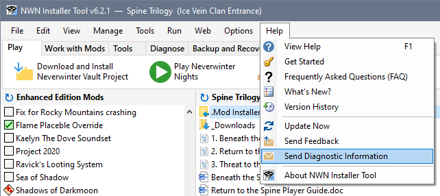
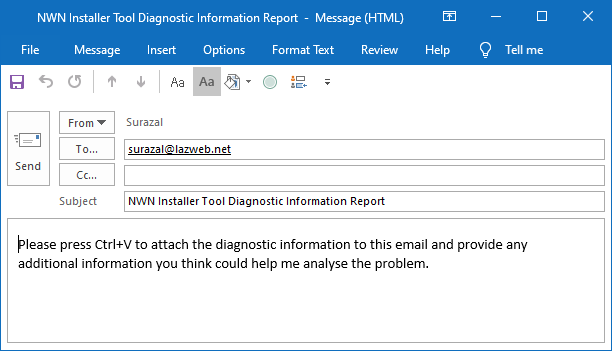
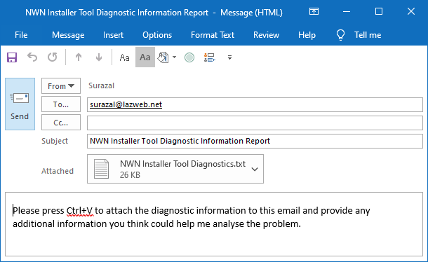

Follow this procedure to send diagnostic information to Surazal when you are having non-fatal issues with the Installer Tool and want to report the problem.



I will investigate the problem and respond to your email with the results of my diagnosis.